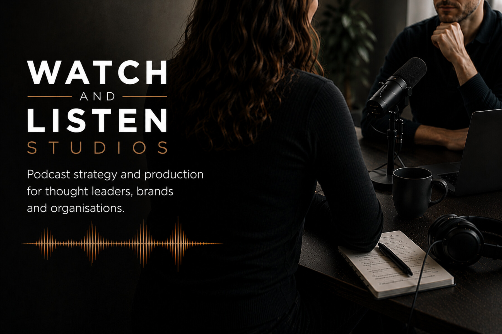
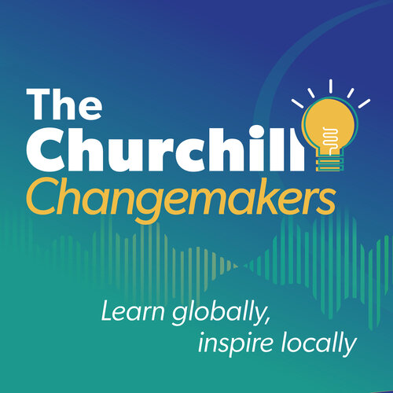
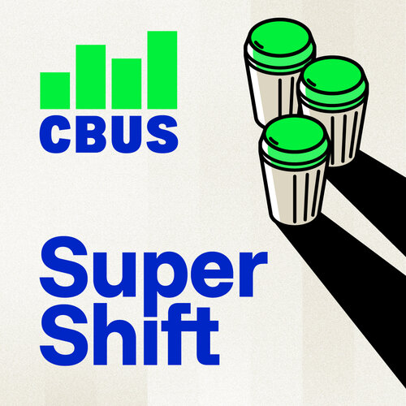
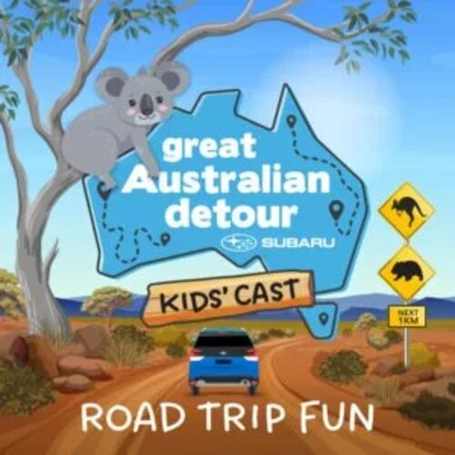
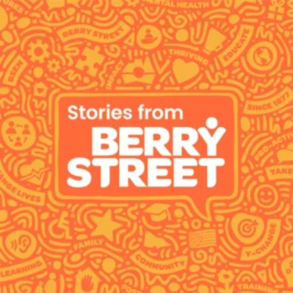
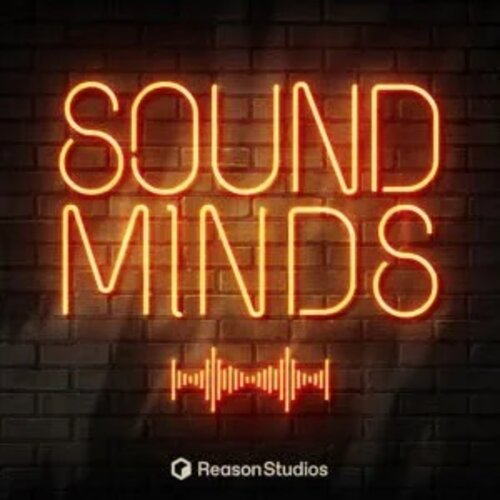
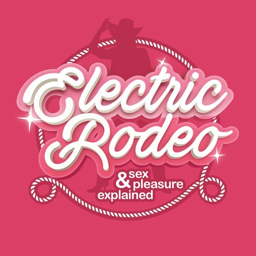
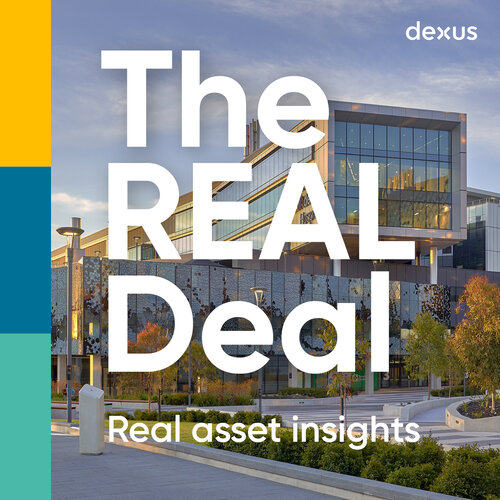

Watch & Listen

Watch & Listen is an independent consultancy specialising in audio and video podcasts.
Founded by Nicole Goodman, we help people, brands and organisations transform ideas, expertise and lived experience into compelling stories that people choose to spend time with.
Nicole leads every engagement personally, drawing on a trusted network of experienced editors, videographers and creative specialists to build the right team for each project.
Because that's where your audience chooses to be.
Podcasts invite people to spend time with your ideas. More Australians are accepting that invitation than ever before.
Whether through audio, video or a combination of both, podcasts create space for deeper storytelling, stronger relationships and genuine audience connection.
Every great podcast begins with a clear purpose. Together, we'll define your audience, shape the strategy and transform your ideas into stories people choose to spend time with.
Have a podcast idea, or want to improve one you already have? Let's talk.
Talk through your podcast ideaof Australians, nearly 12 million people, listen to a podcast each month.*
of people consider podcast hosts more trustworthy than other influencers.†
of marketers have already adopted podcasts in their marketing strategy.†
Australia's podcast ad revenue in 2025, up from $118 million in 2024.‡
We understand people, storytelling and the power of podcasting.
Whether you have a detailed brief or just the seed of an idea, we're ready to help shape what comes next.
Every project starts with curiosity. We take the time to understand your goals, your audience and the story you're trying to tell before recommending how to tell it.
From format and structure to distribution and growth, we help make informed creative decisions that give every podcast the strongest possible foundation.
We've partnered with organisations, brands and independent creators across finance, healthcare, education, technology, leadership, entertainment and the not-for-profit sector, bringing fresh thinking rather than a one-size-fits-all approach.
Whether you need strategic advice, executive production or coaching for hosts and guests, we work alongside your team to make the process clear, enjoyable and creatively rewarding.
Not sure where to start? That's what the first conversation is for.
Book a free 30-min callFrom strategy to growth.
Every project is different. Some clients partner with us from the very beginning, while others bring us in at key stages where experienced guidance can make the biggest difference.
Whether you're launching a new podcast or refining an existing one, we'll help define the strategy that underpins every creative decision.
Together we'll develop:
- Purpose and objectives
- Audience strategy
- Positioning
- Editorial/story direction
- Content themes
- Format (interview, narrative or hybrid)
- Audio, video or both
- Host and guest strategy
- Launch and distribution plan
- Marketing foundations
The strongest podcasts don't happen by chance. They begin with a clear brief, thoughtful strategy and a shared understanding of what success looks like.
Whether you need end-to-end production or support at key stages, Watch & Listen oversees every aspect of the process, bringing together the right people and keeping your project on track.
- Project planning
- Guest & host coordination
- Episode development
- Interview preparation
- Creative guidance
- Podcast brand & launch assets
- Recording
- Interview direction
- Script development
- Creative oversight
- Editing, mixing & mastering
- Quality assurance
- Marketing asset development
- Platform preparation
- Distribution
- Episode release
- Launch support
Every production is tailored to suit your objectives, timeline and budget.
Creating the podcast is only half the job. Helping people discover it is the other. We help integrate your podcast into your broader marketing strategy so every episode continues working long after it's published. Support may include:
- Marketing strategy
- Podcast SEO
- Audiograms & video assets
- Guest sharing kits
- Owned media promotion
- PR & partnerships
- Paid campaign guidance
Helping individuals and teams build the skills and confidence to create engaging podcasts, including:
- Host coaching
- Guest preparation
- Interview techniques
- Team workshops
- Recording workflows
Not every client needs every service. If you're unsure where to start, Nicole can help you find the right approach.
Find the right supportAn independent consultancy, built on a decade in podcasting.
Hi, I'm Nicole Goodman.
Podcasting may be where I work today but helping people communicate has been my focus for more than twenty years. After a career in advertising, marketing and client strategy, I was drawn to podcasting, a medium which allows me to be equally strategic and creative.
I start by listening. Before we think about microphones, cameras or distribution channels, I want to understand your audience, your goals and the story you're trying to tell. The strongest podcasts begin with a clear purpose, a thoughtful strategy and a strong brief.
What I enjoy most is helping clients discover the story they didn't realise they had. Sometimes it's hidden in years of experience. Sometimes it's revealed in a single conversation.
From there, I'll help shape the strategy, choose the right format and guide the production. Whether it's audio, video or a combination of both, the format should always serve the story.
I also think beyond the podcast itself. A successful show should become a long-term business asset, supporting thought leadership, PR, content marketing and audience growth long after each episode is released.
You'll work directly with me throughout the project. Where additional expertise is needed, I'll bring together trusted editors, videographers and creative specialists to build the right team for your podcast.
Clients I've produced podcasts for include Subaru Australia, Cbus Super, Berry Street, The Churchill Trust, Leading Teams, the University of Sydney and the University of Notre Dame. I'm also an Australian Podcast Award winner and a multiple industry award finalist.
Want an experienced podcast partner so you don't have to navigate the process on your own?
Work with Nicole
The Churchill Changemakers
Season 3 turns to impact, ten Churchill Fellows, years on from their fellowships, reveal what became of their big ideas. Hosted by Fellow Michelle Ainsworth.

Cbus Super Shift
Host Andrew Mackinnon, a Cbus Coordinator and an advice expert unpack what's enough to live well, how to track your super, and planning for what you leave behind.

Great Australian Detour Kids' Cast
Andrew Daddo takes families around Australia to meet its people, places, animals and food, with a quiz at the end of every episode.

Stories from Berry Street
ABC's Richelle Hunt talks to the people at Berry Street tackling childhood trauma and family violence, and building safer homes for kids across Australia.

Sound Minds
Host Grace McCallum gets inside the studio and the minds of artists and producers, Tanya Doko, Eric Bazilian and more, chasing what "making it" really means, quickfire round included.

Electric Rodeo
A New Zealand sexuality podcast on sex, pleasure and relationships, normal, messy, and a hell of a lot of fun. Ye-haw.

The REAL Deal
Former property editor Turi Condon sits down monthly with Dexus CEO Darren Steinberg and others, telling it how it is across the real asset sector.
Destination Medicine
With 64-plus medical specialties on the table, relaxed conversations with doctors in rural and remote Australia on how they found their path to rural medicine.
Have a podcast idea you want to discuss?
Talk to NicoleLet's talk.
Every podcast starts with a conversation.
Whether you're exploring your first idea or looking to take an existing show further, I'd love to hear what you're working on.
Book a free 30-minute strategy call.
Bring your ideas, your questions or your existing podcast. We'll talk through where you're at and what the best next step might be.